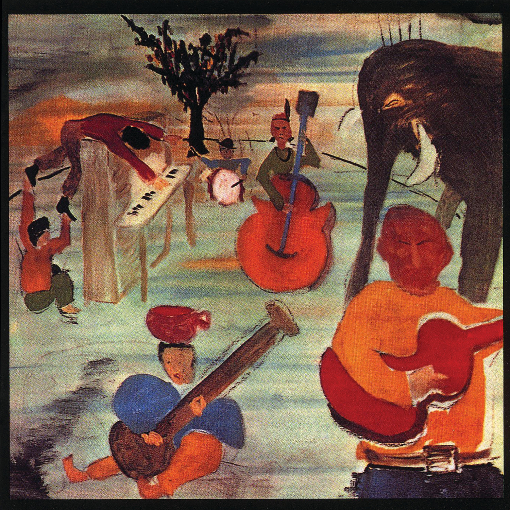

Day 99

The Band ◆ Tears of Rage ◆ Music from Big Pink ◆ 1968
上星期开车去 Arizona 看弟弟，顺便去大峡谷逛了一圈。几天下来开车开了个够。我本来是很怕开长途的，因为开不了一个小时就会开始困得不行。但最近发现了灵丹妙药：开车的时候听播客就一点都不困。唯一的问题是播客听一集少一集，开车回家的末尾听完了出门前准备的存货。最后的一个多小时是听 The Band 的 Greatest Hits 开完的，其中一首 Tears of Rage 我非常喜欢，之前竟然被我错过了。我尤其喜欢法国号1加入的时候，还有几个人合唱但又微微错开的时候。Bob Dylan 的歌词也有感情。
这张封面……是 Bob Dylan 画的。乍一看好丑，但是越看越感觉……还行？
我本来只是想介绍 Tears of Rage 一首，但其实整张专辑都美妙非凡，The Weight，Lonesome Suzie，I Shall Be Released 尤其值得一听。另外推荐读一读这两篇评论：126: Bob Dylan, ‘Tears of Rage’ (The Basement Tapes) 和 127: The Band, ‘Tears of Rage’ (“Music from Big Pink”)。
We carried you in our arms on Independence Day
And now you’d throw us all aside and put us all away
Oh, what dear daughter ’neath the sun could treat a father so
To wait upon him hand and foot and always tell him “No”?
Tears of rage, tears of grief
Why must I always be the thief?
Come to me now, you know we’re so alone
And life is brief
It was all very painless
When you went out to receive
All that false instruction
Which we never could believe
And now the heart is filled with gold
As if it was a purse
But, oh, what kind of love is this
Which goes from bad to worse?
Tears of rage, tears of grief
Why must I always be the thief?
Come to me now, you know we’re so alone
And life is brief
We pointed you the way to go
And scratched your name in sand
Though you just thought it was nothing more
Than a place for you to stand
I want you to know that while we watched
You discovered no one would be true
That I myself was among
The ones who thought
It was just a childish thing to do
Tears of rage, tears of grief
Why must I always be the thief?
Come to me now, you know we’re so alone
And life is brief
Source: AZ Lyrics